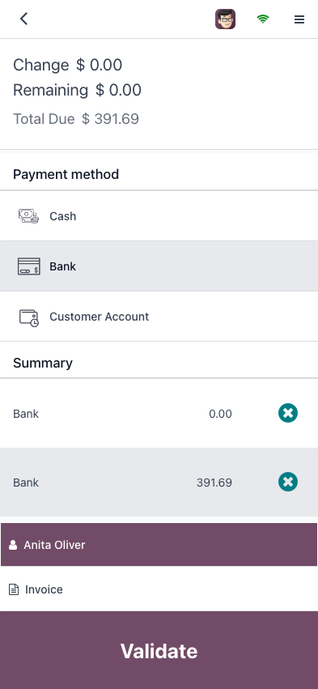
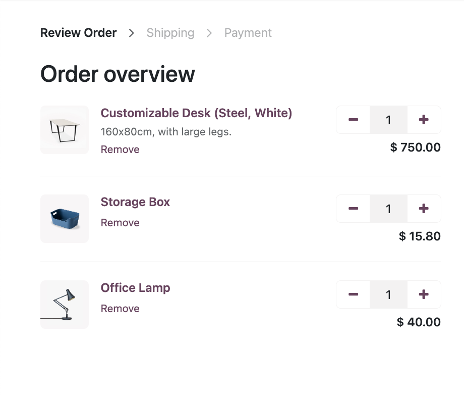

A reliable Point of Sale built for modern retailers. Inventory, RFID, promotions, loyalty, B2C & B2B, multi-store, accounting, and eCommerce — all in one platform.
Interface that has it all: so intuitive that anyone can master it in minutes, yet packed with a range of advanced options. Handle any transaction with ease and focus on what matters: the customers.

Step into the future. From the kiosk or their smartphones, your customers can do everything by themselves, from the order to the payment.


Keep the clients coming. Improve their shopping experience with loyalty programs: points, rewards, and gift cards. Handling a refund? Use the eWallet to bump up retention while keeping the clients happy.
Click and collect. No more chaos between your selling channels. Allow clients to order online and pick up at the store. Preparation displays allows you to prepare large orders in advance.


Odoo works like a charm across tablets, laptops, desktops, and industrial machines. Sync it with barcode scanners and scales.
Create cross-platform reward programs to keep your customers coming back.
Manage several cashier accounts and secure them with badges or PIN codes.
Print invoices on the fly, send them via email or a QR code.
Payments made offline are automatically synchronized when you are reconnected.
Use cash, checks, credit cards and add other payment methods in a flash.

Expand as you grow.
“Working with Odoo allowed us to digitize all our internal processes. We were able to be more efficient and we could finally reach full traceability on our products Lifecycle.”